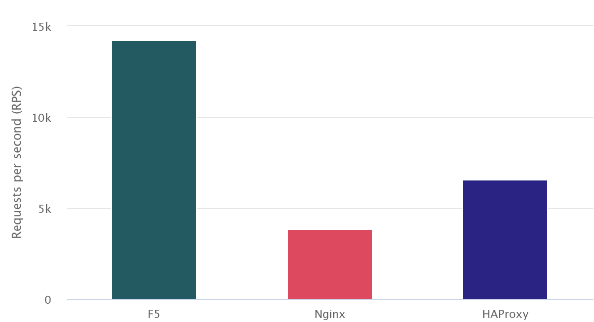

git clone https://github.com/cloudadc/container-ingress.git
cd container-ingress/performance/installContainer Ingress Performance
Table of Contents
HTTP Request Performance Comparision
This section will compare the performance of different Ingress controller(F5, Nginx, HAProxy) to process simple http request.
Software Used
-
wrk4.1.0 -
k8s1.15.12, one master two worker, 6 vCPU 12 GB(each node 2 vCPU 4 GB) -
CentOS Linux7.8.2003 -
nginx/nginx-ingress:1.7.2 -
f5networks/k8s-bigip-ctlr:2.0.0 -
haproxytech/kubernetes-ingress:latest -
kylinsoong/cafe:1.0
Set up
1. Get Code
2. Install nginx ingress controller
kubectl apply -f ns-and-sa.yaml
kubectl apply -f rbac.yaml
kubectl apply -f default-server-secret.yaml
kubectl apply -f nginx-config.yaml
kubectl apply -f vs-definition.yaml
kubectl apply -f vsr-definition.yaml
kubectl apply -f ts-definition.yaml
kubectl apply -f nginx-ingress.yaml
kubectl apply -f nginx-ingress-nodeport.yaml3. Install F5 container ingress service
kubectl create ns bigip-ctlr
kubectl create secret generic bigip-login --from-literal=username=admin --from-literal=password=admin.F5demo.com -n bigip-ctlr
kubectl create serviceaccount bigip-ctlr -n bigip-ctlr
kubectl apply -f rbac-cis.yaml
kubectl apply -f cis.yaml4. Install HAProxy controller
kubectl apply -f haproxy-ingress.yaml5. Verify the installation
$ kubectl get ns
NAME STATUS AGE
bigip-ctlr Active 5m
haproxy-controller Active 5m
nginx-ingress Active 5mTopology
The topology looks like below diagram:

The cafe application have 3 replicas are used as performance comparision application, the k8s ingress object are created, use the following command to deploy performance comparision application:
Get Code
git clone https://github.com/cloudadc/container-ingress.git
cd container-ingress/performance/cafeDeploy Cafe Application
kubectl apply -f app-deploy.yaml
kubectl apply -f app-ingress.yamlThere are 3 ingress controller deployed, F5, Nginx and HAProxy, refer to above Set up section for details. The Ingress controller will take aware of the created k8s ingress object and make a amendment of controller controll panel settings to be ready for the incoming request:
-
F5 will add a Policy rule to exist Virtual server and add a Pool with 3 pool members refer to the 3 POD of
cafeservice -
Nginx will add a config file under
/etc/nginx/conf.d/which contains server and upstream settings, the upstream contains 3 servers refer to the 3 POD ofcafeservice -
HAProxy will update the configuration files that add a frontend and a backend, the backend contains 3 servers refer to the 3 POD of
cafeservice
Metrics Collected
There are 3 metrics are collected, RPS, TPS and Throughput,
-
Requests per second (RPS) - The number of requests the IC can process per second, averaged over a fixed time period.
-
Transactions per second (TPS) - The number of new HTTP connections the IC can establish and serve per second, averaged over a fixed time period.
-
Throughput – The data transmission rate that IC is able to sustain while processing HTTP requests for static content over a fixed time period.
There are 3 groups of metrics are collected, each for a different IC, the below commands are are use to collect metrics:
wrk -t 6 -c 100 -d 180s http://perftest01.example.com/coffee
wrk -t 6 -c 100 -d 180s -H 'Connection: Close' http://perftest01.example.com/coffeeResults
Results
Type,RPS,TPS,Throughput
F5,14216,514,5.10
Nginx,3815,278,1.36
HAProxy,6569,274,2.20Requests per second (RPS)

Transactions per second (TPS)
Throughput

Journals
./wrk -t 6 -c 100 -d 180s http://perftest01.example.com/coffee
Running 3m test @ http://perftest01.example.com/coffee
6 threads and 100 connections
Thread Stats Avg Stdev Max +/- Stdev
Latency 6.79ms 2.50ms 43.36ms 80.22%
Req/Sec 2.38k 196.42 2.95k 74.06%
2559718 requests in 3.00m, 0.90GB read
Requests/sec: 14215.71
Transfer/sec: 5.10MB
./wrk -t 6 -c 100 -d 180s -H 'Connection: Close' http://perftest01.example.com
Running 3m test @ http://perftest01.example.com
6 threads and 100 connections
Thread Stats Avg Stdev Max +/- Stdev
Latency 14.73ms 4.73ms 79.80ms 79.79%
Req/Sec 762.15 244.45 1.01k 85.54%
92481 requests in 3.00m, 42.36MB read
Socket errors: connect 96, read 0, write 0, timeout 0
Requests/sec: 513.57
Transfer/sec: 240.91KB
./wrk -t 6 -c 100 -d 180s http://perftest01.example.com/coffee
Running 3m test @ http://perftest01.example.com/coffee
6 threads and 100 connections
Thread Stats Avg Stdev Max +/- Stdev
Latency 28.04ms 27.88ms 1.03s 96.63%
Req/Sec 639.07 90.63 1.15k 70.78%
687099 requests in 3.00m, 245.69MB read
Requests/sec: 3815.10
Transfer/sec: 1.36MB
./wrk -t 6 -c 100 -d 180s -H 'Connection: Close' http://perftest01.example.com
Running 3m test @ http://perftest01.example.com
6 threads and 100 connections
Thread Stats Avg Stdev Max +/- Stdev
Latency 22.36ms 32.54ms 1.03s 99.57%
Req/Sec 554.09 162.35 767.00 88.63%
50056 requests in 3.00m, 14.46MB read
Socket errors: connect 96, read 0, write 0, timeout 0
Non-2xx or 3xx responses: 50056
Requests/sec: 277.93
Transfer/sec: 82.24KB
./wrk -t 6 -c 100 -d 180s http://perftest01.example.com/coffee
Running 3m test @ http://perftest01.example.com/coffee
6 threads and 100 connections
Thread Stats Avg Stdev Max +/- Stdev
Latency 14.97ms 7.95ms 251.38ms 79.14%
Req/Sec 1.10k 121.04 1.48k 68.66%
1182909 requests in 3.00m, 395.97MB read
Requests/sec: 6568.77
Transfer/sec: 2.20MB
./wrk -t 6 -c 100 -d 180s -H 'Connection: Close' http://perftest01.example.com
Running 3m test @ http://perftest01.example.com
6 threads and 100 connections
Thread Stats Avg Stdev Max +/- Stdev
Latency 19.63ms 19.60ms 1.03s 99.79%
Req/Sec 593.08 198.71 0.85k 88.60%
49289 requests in 3.00m, 10.95MB read
Socket errors: connect 96, read 0, write 0, timeout 0
Non-2xx or 3xx responses: 49289
Requests/sec: 273.69
Transfer/sec: 62.27KBF5 CIS Performance Metric
Preparing
Get Code
git clone https://github.com/cloudadc/container-ingress.git
cd container-ingress/performance/discoverDeploy 200 Application
kubectl apply -f 200-ns-deploy.yamlIngress in multiple namespaces
Tmsh command: count time
// count total pool
STARTTIME=$(date +%s) ; for i in {1..100} ; do tmsh list ltm pool /k8s/Shared/* | grep pool | wc -l ; ENDTIME=$(date +%s); echo "spend $(($ENDTIME - $STARTTIME)) seconds" ; sleep 3 ; done
// count specific pool's total pool member
STARTTIME=$(date +%s) ; for i in {1..100} ; do tmsh list ltm pool /k8s/Shared/ingress_perftest299_app_svc | grep address | wc -l; ENDTIME=$(date +%s); echo "spend $(($ENDTIME - $STARTTIME)) seconds" ; sleep 3 ; doneSteps
kubectl apply -f 20-ns-ingress.yaml
kubectl apply -f 40-ns-ingress.yaml
kubectl apply -f 60-ns-ingress.yaml
kubectl apply -f 80-ns-ingress.yaml
kubectl apply -f 100-ns-ingress.yaml
kubectl apply -f 120-ns-ingress.yaml
kubectl apply -f 140-ns-ingress.yaml
kubectl apply -f 160-ns-ingress.yaml
kubectl apply -f 180-ns-ingress.yaml
kubectl apply -f 200-ns-ingress.yamlResults
total_namespaces,total_deploy_time,service_discover_time,total_deleletion_time,delete_one_ingress,create_one_ingress
20,12,3,4,3,3
40,18,5,5,4,5
60,21,6,6,4,6
80,25,9,7,7,7
100,27,9,8,8,10
120,31,10,8,8,13
140,38,11,9,10,16
160,42,11,9,14,18
180,49,17,12,15,19
200,54,18,14,17,21-
total_namespaces - the total number of namespaces
-
total_deploy_time - the total time of deploy all ingress
-
service_discover_time - the time of pod change be update to ingress
-
total_deleletion_time - the total time of delete all ingress
-
delete_one_ingress - the time of delete one ingress
-
create_one_ingress - the time of create one ingress in current namespace

Configmap in multiple namespaces
Tmsh command: count time
STARTTIME=$(date +%s) ; for i in {1..100} ; do tmsh list ltm pool /perftest109/perftest109/* | grep pool | wc -l ; ENDTIME=$(date +%s); echo "spend $(($ENDTIME - $STARTTIME)) seconds" ; sleep 3 ; done
STARTTIME=$(date +%s) ; for i in {1..100} ; do tmsh list ltm pool /perftest122/perftest122/* | grep address | wc -l ; ENDTIME=$(date +%s); echo "spend $(($ENDTIME - $STARTTIME)) seconds" ; sleep 3 ; doneSteps
kubectl apply -f 10-ns-configmap.yaml
kubectl apply -f 20-ns-configmap.yaml
kubectl apply -f 30-ns-configmap.yaml
kubectl apply -f 40-ns-configmap.yaml
kubectl apply -f 500-ns-configmap.yaml
kubectl apply -f 60-ns-configmap.yaml
kubectl apply -f 70-ns-configmap.yaml
kubectl apply -f 80-ns-configmap.yaml
kubectl apply -f 90-ns-configmap.yaml
kubectl apply -f 100-ns-configmap.yamlResults
total_namespaces,total_deploy_time,service_discover_time,total_deleletion_time,delete_one_tenant,create_one_tenant
5,15,7,16,6,4
10,20,9,23,9,8
20,37,13,40,12,12
30,54,18,58,20,15
40,72,24,81,30,28
50,96,37,106,50,39
60,110,51,119,61,58
80,161,57,169,73,70
100,205,59,207,97,92-
total_namespaces - the total number of namespaces
-
total_deploy_time - the total time of deploy all configmap
-
service_discover_time - the time of pod change be update to configmap
-
total_deleletion_time - the total time of delete all configmap
-
delete_one_tenant - delete one configmap
-
create_one_tenant - create one configmap
Ingress in single namespace
Tmsh command: count time
Steps
Results
Configmap in single namespace
Tmsh command: count time
STARTTIME=$(date +%s) ; for i in {1..100} ; do tmsh list ltm node /cistest/* | grep node | wc -l ; ENDTIME=$(date +%s); echo "spend $(($ENDTIME - $STARTTIME)) seconds" ; sleep 3 ; done
STARTTIME=$(date +%s) ; for i in {1..100} ; do tmsh list ltm pool /cistest/cistest_app-svc-19/* | grep address | wc -l ; ENDTIME=$(date +%s); echo "spend $(($ENDTIME - $STARTTIME)) seconds" ; sleep 3 ; donSteps
kubectl apply -f X-svc-configmap.yamlResults
total_servicess,total_deploy_time,service_discover_time,total_deleletion_time,delete_one_service,create_one_service
20,14,20,22,19,21
40,36,43,54,39,45
60,55,52,52,65,72
70,63,75,96,65,75
80,72,76,125,75,84
100,89,92,151,91,94